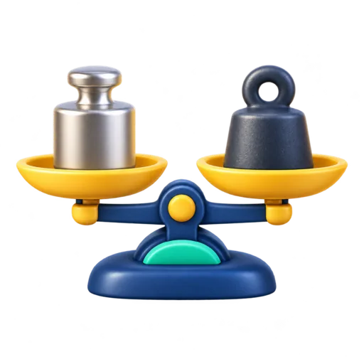

FERRAMENTA GRATUITA
Conversor de peso
Converta quilogramas, gramas, libras, onças, miligramas e toneladas.

Resultado
Informe um valor e escolha as unidades.
Como converter peso e massa
Este conversor transforma valores entre miligramas, gramas, quilogramas, toneladas, onças e libras. É útil para receitas, produtos importados, viagens e medidas internacionais.
Conversões comuns
1 kg = 1.000 g.
1 libra = 0,45359237 kg.
1 kg ≈ 2,20462 libras.
1 onça ≈ 28,35 g.
Exemplo
70 kg correspondem a aproximadamente 154,32 libras.
Observação
No uso cotidiano, costuma-se dizer “peso”, embora as unidades desta ferramenta representem massa. Para outras conversões, use o conversor de comprimento, o conversor de volume ou a calculadora de IMC.